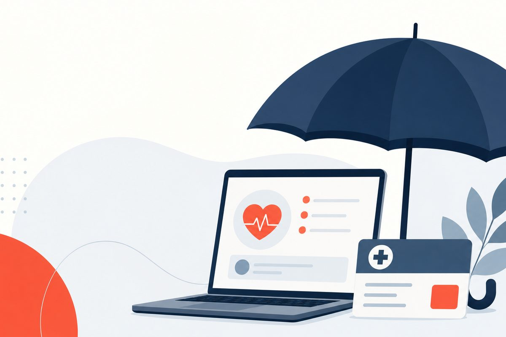

Key Takeaways
- In July 2023, 11.9 million people worked as independent contractors, and they were less likely than workers in traditional arrangements to have health insurance from any source (74.2% vs 84.9%).[1]
- ACA Marketplace plans are available to self-employed workers, and savings are based on your income estimate. You must enroll during Open Enrollment or after a qualifying life event.[2][3]
- You can apply for Medicaid any time of year. In expansion states, adults with income at or below 138% of the federal poverty level can qualify, and starting January 1, 2027, a new monthly work requirement may apply.[4][5]
- Health sharing ministries are not insurance, and short-term plans are not subject to federal individual market consumer protections. Both can leave pre-existing conditions uncovered, so understand the risks before enrolling.[6][7]
- Telehealth and direct primary care can cover a wide range of everyday health needs at predictable, transparent prices, including a flat $79 per visit with TeleDirectMD.

The Gig Economy's Healthcare Gap
Federal survey data show how many people work outside traditional jobs. In July 2023, 11.9 million people were independent contractors (7.4 percent of total employment), 2.8 million were on-call workers, and 6.9 million held contingent jobs.[1] The survey does not count gig work as its own category, but rideshare driving, freelancing, contracting, running a small online business, and on-call work in trades and services all fall outside the traditional W-2 job. It is a mode of work built on flexibility and independence. Healthcare is the cost of that independence that rarely gets discussed until someone needs it.
Unlike a traditional W-2 job, gig work does not come with a human resources department, a benefits enrollment packet, or an employer paying part of your monthly premium. Whatever coverage you have, you arranged it yourself, and you pay its full cost unless you qualify for savings.
This guide is written for gig workers, freelancers, and independent contractors who are navigating their healthcare options: some for the first time, some after a coverage gap, and some who have been uninsured for years and are not sure where to start. We will walk through every realistic option, what each one actually covers, and where telehealth fits into a practical, affordable strategy.
Why Gig Workers Go Without Coverage
The reasons gig workers go uninsured are not primarily about carelessness or misunderstanding. They reflect a system that was designed around stable, employer-based employment, which leaves self-employed and contingent workers navigating a fragmented market on their own. Federal data show the gap: workers in alternative arrangements were less likely than workers in traditional arrangements to have employer-provided health insurance on their main job.[1]
Cost is a major barrier. Among uninsured people in general, inability to afford coverage is the most commonly cited reason for being uninsured.[8] For someone whose income varies week to week, or who is just starting out, a full-price monthly premium plus a deductible can be hard to fit into the budget.
Income unpredictability creates a second problem. Marketplace savings are based on your estimated net income for the year you are getting coverage, not last year's income. If you wind up making more than you reported, you could have to pay back some or all of the premium tax credits you took during the year; if you make less, you could qualify for more savings than you claimed.[9] This uncertainty can make Marketplace enrollment feel risky, which is one more reason some people skip it.
Finally, there is genuine confusion about what options exist. Many gig workers do not know they may qualify for Medicaid, are unaware of open enrollment windows, or have never heard of direct primary care. This guide aims to close that knowledge gap.
Healthcare Options for Gig Workers: A Complete Overview
ACA Marketplace Plans
The Affordable Care Act created a health insurance marketplace where individuals, including the self-employed, can buy coverage.[2] For 2026 and later coverage, premium tax credits generally require household income of at least 100% and no more than 400% of the federal poverty level (FPL). The IRS notes that Congress expanded eligibility only temporarily, for tax years 2021 through 2025.[10][11]
Plans are grouped into four metal categories (Bronze, Silver, Gold, Platinum) based on how the plan and you split costs for covered services; the categories have nothing to do with the quality of care. Bronze plans pay about 60% of costs on average, leaving you about 40%, and have high deductibles.[12] If you qualify for cost-sharing reductions, which lower deductibles, copayments, and coinsurance, you must enroll in a Silver plan to get them.[13] Marketplace plans cannot reject you, charge you more, or refuse to pay for essential health benefits because of a pre-existing condition (grandfathered plans are an exception).[14] A key change for 2026: for tax years after 2025, there is no cap on repaying excess advance premium tax credits, so underestimating your income can mean a larger tax bill.[11] Check current savings at HealthCare.gov before assuming what your premium will be.
On HealthCare.gov, Open Enrollment for 2027 coverage runs November 1, 2026 through January 15, 2027; enroll by December 15 for coverage that starts January 1. Outside this window, you can enroll only if you qualify for a Special Enrollment Period after a life event, like getting married, a new baby or dependent, moving, or losing health coverage.[3] If your state runs its own Marketplace, check that site's dates.
As a self-employed individual, you report your net self-employment income (after business expenses) when estimating your Marketplace income, and you should update your Marketplace application as soon as possible if your yearly net income looks higher or lower than you estimated.[9] If you had a net profit from self-employment, you may also be able to deduct what you paid for medical, dental, and vision insurance for yourself, your spouse, and your dependents on Schedule 1 of Form 1040. You cannot take the deduction for any month you were eligible to take part in an employer-subsidized plan, including one through your spouse's employer.[15] If you also receive premium tax credits, the IRS instructions point to Publication 974 for how the two interact.
Medicaid
Medicaid is the federal-state health program for low-income individuals. Under the ACA, states can expand Medicaid to adults with income at or below 138% of the federal poverty level, and as of January 2025, 40 states and the District of Columbia had done so.[4] Starting January 1, 2027, in states that cover adults based on income alone, you may need to meet a new monthly work requirement to qualify for Medicaid or keep your coverage.[5]
For gig workers, this is often the most overlooked option. Because gig income fluctuates, sometimes dramatically across seasons, platforms, or project availability, some workers may qualify during lower-income periods. There is no open enrollment period for Medicaid; you can apply at any time through your state Medicaid office or through the Marketplace application.[4][7] If you lose or are denied Medicaid because you did not meet your state's work requirement, you may be able to get Marketplace coverage, but you will not qualify for savings to lower your Marketplace plan costs.[5]
Medicaid benefits differ by state, but all states provide comprehensive coverage, and Medicaid offers free or low-cost coverage to eligible low-income adults. If your state has not expanded Medicaid and you are not eligible, you may have fewer options for coverage, so check your state's specific rules.[5]
Health Sharing Ministries
Health sharing ministries (HSMs) are membership organizations, typically faith-based nonprofits, in which members share each other's medical expenses.[6]
HSMs are not considered health insurance, are not regulated as insurance under state or federal law, and are not legally or contractually obligated to pay your health care costs. Most insurance policies must cover pre-existing conditions, but HSMs do not have to provide that or many other consumer protections.[6] Before joining, read the organization's actual terms and conditions carefully, not just the marketing materials.
HSMs can be a reasonable fit for healthy individuals who primarily need a backstop for unexpected, large expenses and are not managing ongoing chronic conditions. They are a poor fit for anyone with a pre-existing condition or ongoing care needs, including predictable prescription requirements.
Short-Term Health Insurance
Short-term, limited-duration insurance is temporary coverage. Federal rules adopted in 2024 limit the initial contract term to no more than three months.[7] In August 2025, however, the federal Departments said they do not intend to prioritize enforcing that 2024 definition while they reconsider it through rulemaking, and states may apply their own definitions, so the plan lengths sold in your state may differ.[16] Under federal law, these plans can deny coverage because of a pre-existing condition or health status, and they are not subject to federal individual market consumer protections and requirements for comprehensive coverage. Read the plan documents to see what is covered.[7]
Short-term plans make the most sense for gig workers in a defined transitional period, such as between jobs, waiting for open enrollment, or recently aging off a parent's plan, where the time horizon is genuinely short and the primary risk being covered is a serious unexpected illness or injury. They should not be used as a long-term substitute for comprehensive coverage.
Telehealth and Direct Primary Care
This is where the modern healthcare landscape has genuinely changed for gig workers. Two models now make everyday primary care accessible without traditional insurance:
Direct primary care (DPC) is a membership model that does away with traditional third-party fee-for-service billing and instead charges patients a periodic fee for primary care services. A 2015 review of DPC practices across the United States confirmed lower price points and a broad distribution of practices, but noted that data about quality are lacking.[17] What the fee includes varies by practice, so compare membership terms. Because DPC covers primary care, it does not replace insurance for hospital or specialist care.
Telehealth provides on-demand access to a physician via secure video visit. For the many conditions that do not require a physical exam, imaging, or lab work, telehealth is clinically appropriate. Transparent, upfront pricing means no hidden fees. TeleDirectMD's gig worker program offers visits for a flat $79, with same-day availability including evenings and weekends, across 40+ states.
Community Health Centers (FQHCs)
Federally Qualified Health Centers are community-based clinics that receive federal funding and are required to offer services regardless of a patient's ability to pay. They offer primary care and additional health services on a sliding fee scale based on a patient's income.[7] Health centers provide primary medical and dental care to people of all ages, whether or not they have health insurance.[18]
The HRSA Find a Health Center tool (findahealthcenter.hrsa.gov) lets you look for a health center near you.[18] Wait times can be longer than at private practices, and availability varies by region, but for uninsured gig workers FQHCs are a legitimate resource.
| Option | Typical Cost | Pre-existing Conditions | Best For |
|---|---|---|---|
| ACA Marketplace (with subsidy) | Depends on income; premium tax credits may lower it | Covered, no exclusions | Comprehensive coverage, ongoing conditions |
| Medicaid | Free or low-cost | Covered, no exclusions | Lower-income gig workers in expansion states |
| Health Sharing Ministry | Varies; payment is not guaranteed | Not required to cover | Healthy individuals; unexpected large expenses only |
| Short-Term Plan | Varies by plan | Can be denied under federal law | Short gaps in coverage; transitional periods |
| Telehealth (TeleDirectMD) | $79/visit | Treated within scope | Everyday primary care; prescription refills; no-insurance access |
| FQHC / Community Health Center | Sliding fee scale based on income | Covered | Lower-income, comprehensive primary care |
The Real Cost of Delaying Care
The most common healthcare strategy among uninsured gig workers is not a strategy at all. It is avoidance: ignore the problem and hope it resolves. It works, until it does not.
Kidney infections often begin in the bladder and move up to infect one or both kidneys; they can be very painful and cause serious health problems,[19] and someone who is very sick from a kidney infection may need hospital care.[20] High blood pressure usually has no signs or symptoms, yet it increases the risk for heart disease and stroke.[21] Complications of a sinus infection, such as infection of the skin around the eye or meningitis, are very rare, but a severe headache that over-the-counter pain medicine does not relieve, or any change in your vision during a sinus infection, is a reason to contact a clinician.[22]
U.S. Census Bureau data show that working-age adults are more likely to be uninsured than children: in 2025, 11.0 percent of adults ages 19 to 64 had no health insurance, compared with 5.8 percent of children under 19, and adults ages 19 to 25 had the highest uninsured rate (14.5 percent).[23]
A freelance designer in her early 30s has been avoiding a pharmacy refill for her blood pressure medication because she lost her employer coverage six months ago and has not sorted out a new plan. Her uncontrolled hypertension is not causing any obvious symptoms yet. A TeleDirectMD visit for hypertension management and refills costs $79. That is one hour of her working rate. The cost of not going is uncalculable.
How Telehealth Fills the Gap for Gig Workers
Telehealth is not a perfect substitute for all primary care. There are conditions that require a hands-on physical examination, an in-person lab draw, or imaging that a video screen cannot provide. Any reputable telehealth service will tell you this honestly, and TeleDirectMD does.
What telehealth handles well is a large category of everyday conditions that gig workers, like everyone else, encounter regularly: respiratory infections, skin conditions, urinary tract infections, allergies, ear and sinus issues, stable chronic condition management, and prescription refills. For these, a video visit with a board-certified physician can often provide the evaluation needed without the logistics of getting to a clinic.
For gig workers specifically, the structural advantages matter:
- Transparent pricing. No facility fees, no mystery bills, no insurance prior authorizations. You know what the visit costs before you book it.
- Schedule flexibility. Same-day visits, evenings and weekends, not just Monday through Friday 9–5.
- No time off required. A gig worker who is paid for hours worked cannot easily take half a day to sit in a waiting room. A video visit can happen between jobs.
- No app required. The HIPAA-compliant platform works in a browser, with no download and no setup.
- 40+ states covered. Whether you are working remotely from a different state or have recently relocated, coverage follows you.
What TeleDirectMD Offers Gig Workers
TeleDirectMD is a telehealth practice founded and operated by a board-certified Family Medicine physician. The practice is built specifically for patients who need accessible, affordable care outside of the traditional employer-insurance model. See our dedicated gig worker healthcare page and our general uninsured and underinsured care page for more detail.
Commonly treated conditions include:
- Urinary tract infections (UTIs)
- Sinus infections
- High blood pressure management and prescription refills
- Performance anxiety
- Seasonal allergies, sore throat, cold and flu, pink eye, skin rashes, and 60+ additional conditions
Every visit is conducted by our board-certified Family Medicine physician via secure HIPAA-compliant video. There is no app download required. Insurance is accepted in select states for patients who have coverage. Payment by credit card, debit card, HSA, or FSA is available for self-pay visits.
What TeleDirectMD does not do: prescribe controlled substances, manage acute emergencies, or serve as a substitute for in-person evaluation when one is clinically necessary. If your concern falls outside our scope, we will tell you and help direct you to the right resource.
Frequently Asked Questions
There is no single best option. It depends on your income, health needs, and state of residence. For 2026 and later coverage, premium tax credits generally require household income of at least 100% and no more than 400% of the federal poverty level, and within that range ACA Marketplace plans with premium tax credits are often the most comprehensive choice.[10][11] If your income is at or below 138% of the federal poverty level in a state that expanded Medicaid, Medicaid offers free or low-cost coverage, although a new monthly work requirement may apply starting January 1, 2027.[4][5] Some self-employed people pair a direct primary care membership with a high-deductible plan; note that catastrophic plans are open only to people under 30 or those with a hardship or affordability exemption.[7] Telehealth like TeleDirectMD can be layered into any of these strategies for convenient, affordable access to routine care.
Often, yes, depending on your state and income. As of January 2025, 40 states and the District of Columbia had expanded Medicaid, which covers adults with income at or below 138% of the federal poverty level.[4] Because gig income fluctuates, some workers may qualify during lower-income months or seasons. Starting January 1, 2027, adults in those states may need to meet a new monthly work requirement to qualify for Medicaid or keep it.[5] There is no open enrollment period for Medicaid, so you can apply any time through your state Medicaid office or the Marketplace application.[4][7] If your state has not expanded Medicaid and you are not eligible, you may have fewer options for coverage.[5]
Health sharing ministries are not insurance and are not regulated as insurance under state or federal law.[6] Members share each other's medical costs, but the ministries are not legally or contractually obligated to pay health care costs, and they do not have to provide consumer protections that most insurance policies must include, such as coverage for pre-existing conditions.[6] For healthy individuals with low, predictable health needs, an HSM may serve as a backstop for unexpected large expenses. However, it carries real financial risk for anything serious or ongoing. Read the organization's actual terms and conditions, not just the marketing, before enrolling.
Telehealth is appropriate for a wide range of common conditions: sinus infections, UTIs, skin rashes, sore throat, cold and flu, pink eye, seasonal allergies, blood pressure management, prescription refills for stable chronic conditions such as hypertension, hypothyroidism, or hyperlipidemia, and more. TeleDirectMD treats over 60 conditions. Telehealth cannot replace in-person care when a physical exam, imaging, or lab work is essential to the diagnosis, and TeleDirectMD will tell you directly when your concern requires in-person evaluation rather than guessing.
TeleDirectMD self-pay visits are a $79 flat fee. The price is known upfront, with no facility fees. Payment is accepted via credit card, debit card, HSA, or FSA. Insurance is accepted in select states for patients who have coverage.
On HealthCare.gov, Open Enrollment for 2027 coverage runs from November 1, 2026 through January 15, 2027, and you must enroll by December 15 for coverage that starts January 1. Outside Open Enrollment, you can enroll only if you qualify for a Special Enrollment Period after a life event, like getting married, a new baby or dependent, moving, or losing health coverage. Medicaid and CHIP applications are accepted at any time.[3] If your state runs its own Marketplace, check that site's dates. If you miss Open Enrollment and do not have a qualifying event, a short-term plan or telehealth may help bridge the gap while you wait for the next enrollment period.
Ready to Get Care Without the Runaround?
TeleDirectMD offers board-certified Family Medicine care for a flat $79. Same-day visits available, evenings and weekends, across 40+ states. No insurance required, and no app download needed.
Book a $79 Visit Learn More for Gig WorkersReferences
- U.S. Bureau of Labor Statistics. Contingent and Alternative Employment Arrangements, July 2023 (news release). November 8, 2024. Accessed November 15, 2026. https://www.bls.gov/news.release/conemp.nr0.htm
- HealthCare.gov. Health care insurance coverage for self-employed individuals. Accessed November 15, 2026. https://www.healthcare.gov/self-employed/coverage/
- HealthCare.gov. When can you get health insurance? (Dates and deadlines for 2027 coverage). Accessed November 15, 2026. https://www.healthcare.gov/quick-guide/dates-and-deadlines/
- Centers for Medicare & Medicaid Services. Medicaid and Children's Health Insurance Program (CHIP) Overview. Version 4.0, May 2025. Accessed November 15, 2026. https://www.cms.gov/marketplace/technical-assistance-resources/fast-facts-medicaid-chip.pdf
- HealthCare.gov. Medicaid & CHIP coverage. Accessed November 15, 2026. https://www.healthcare.gov/medicaid-chip/getting-medicaid-chip/
- Michigan Department of Insurance and Financial Services. DIFS Reminds Consumers That Health Care Sharing Ministries Are Not Health Insurance and May Not Provide Important Consumer Protections. January 23, 2024. Accessed November 15, 2026. https://www.michigan.gov/difs/news-and-outreach/press-releases/2024/01/23/difs-reminds-consumers-that-health-care-sharing-ministries-are-not-health-insurance
- Centers for Medicare & Medicaid Services. Health Coverage Options for the Uninsured. Version 1.0, August 2024. Accessed November 15, 2026. https://www.cms.gov/marketplace/technical-assistance-resources/health-coverage-options-for-uninsured.pdf
- Tolbert J, Cervantes S, Bell C, Damico A. Key Facts about the Uninsured Population. KFF. June 16, 2026. Accessed November 15, 2026. https://www.kff.org/uninsured/issue-brief/key-facts-about-the-uninsured-population/
- HealthCare.gov. How to report self-employment income to the Marketplace. Accessed November 15, 2026. https://www.healthcare.gov/self-employed/income/
- Internal Revenue Service. Eligibility for the Premium Tax Credit. Page last reviewed or updated November 6, 2026. Accessed November 15, 2026. https://www.irs.gov/affordable-care-act/individuals-and-families/eligibility-for-the-premium-tax-credit
- Internal Revenue Service. Questions and answers on the Premium Tax Credit. Page last reviewed or updated September 21, 2026. Accessed November 15, 2026. https://www.irs.gov/affordable-care-act/individuals-and-families/questions-and-answers-on-the-premium-tax-credit
- HealthCare.gov. The "metal" categories: Bronze, Silver, Gold and Platinum. Accessed November 15, 2026. https://www.healthcare.gov/choose-a-plan/plans-categories/
- HealthCare.gov. Glossary: Cost-sharing reduction. Accessed November 15, 2026. https://www.healthcare.gov/glossary/cost-sharing-reduction/
- HealthCare.gov. Coverage for pre-existing conditions. Accessed November 15, 2026. https://www.healthcare.gov/coverage/pre-existing-conditions/
- Internal Revenue Service. Instructions for Form 7206 (2025): Self-Employed Health Insurance Deduction. Accessed November 15, 2026. https://www.irs.gov/instructions/i7206
- U.S. Departments of Labor, Health and Human Services, and the Treasury. Statement regarding short-term, limited-duration insurance. August 7, 2025. Accessed November 15, 2026. https://www.dol.gov/agencies/ebsa/laws-and-regulations/laws/affordable-care-act/for-employers-and-advisers/short-term-limited-duration-insurance/stldi-statement-08-07-2025
- Eskew PM, Klink K. Direct Primary Care: Practice Distribution and Cost Across the Nation. Journal of the American Board of Family Medicine. 2015;28(6):793-801. doi:10.3122/jabfm.2015.06.140337. PMID: 26546656. https://pubmed.ncbi.nlm.nih.gov/26546656/
- Health Resources and Services Administration. Get Health Care. Date last reviewed May 2022. Accessed November 15, 2026. https://www.hrsa.gov/get-health-care
- National Institute of Diabetes and Digestive and Kidney Diseases. Definition & Facts of Kidney Infection (Pyelonephritis). Last reviewed October 2024. Accessed November 15, 2026. https://www.niddk.nih.gov/health-information/urologic-diseases/kidney-infection-pyelonephritis/definition-facts
- National Institute of Diabetes and Digestive and Kidney Diseases. Treatment for Kidney Infection (Pyelonephritis). Last reviewed October 2024. Accessed November 15, 2026. https://www.niddk.nih.gov/health-information/urologic-diseases/kidney-infection-pyelonephritis/treatment
- Centers for Disease Control and Prevention. About High Blood Pressure. Reviewed October 13, 2026. Accessed November 15, 2026. https://www.cdc.gov/high-blood-pressure/about/index.html
- MedlinePlus Medical Encyclopedia. Sinusitis. Review date April 29, 2026. Accessed November 15, 2026. https://medlineplus.gov/ency/article/000647.htm
- Bunch LN, Ketema H. Health Insurance Coverage in the United States: 2025. Current Population Reports P60-291. U.S. Census Bureau. September 2026. Accessed November 15, 2026. https://www2.census.gov/library/publications/2026/demo/p60-291.pdf